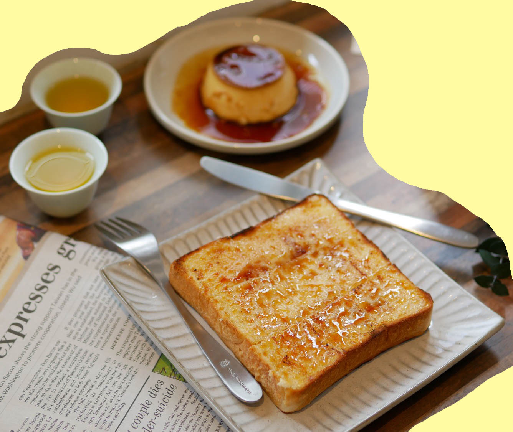

Voyager Cafe
Address / 2F., No. 146-1, Changchun Rd., Zhongshan Dist., Taipei City
Open from 12:00 to 20:30. Close on Wednesday and Thursday.
*Cash only.
Voyager Cafe is famous for sugar baked toast.Instead of usual sugar, voyager cafe use Japanese soft sugar, which gives a special flavor to the toast.The holder will immidiately bake it ,as you order it,ensuring that you got the best timing to eat the toast.One thing I can guarantee you is that the sweentness of the toast will definitely melt the bitterness of your daily life and bring lots of joy to let you smile.
Location
